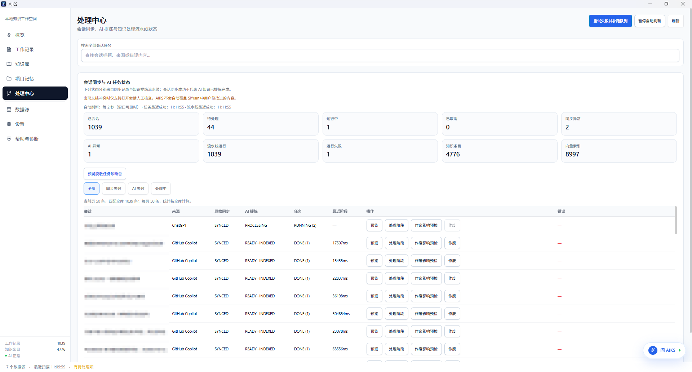
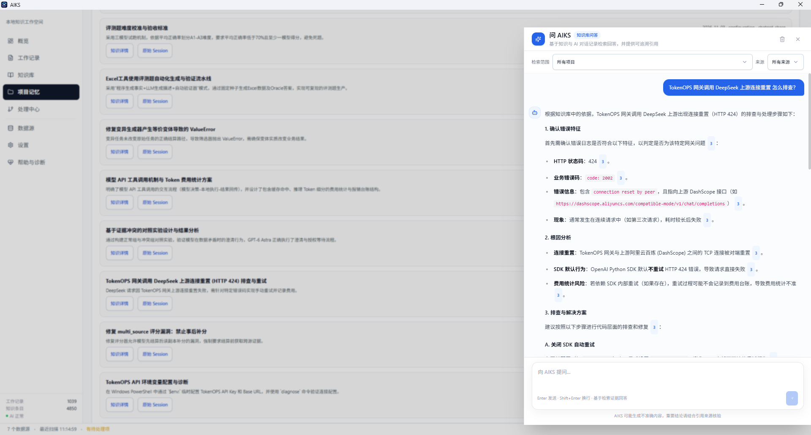

多来源统一采集
按需启用本地 Provider，读取允许范围内的历史会话，并导入支持的公开分享链接。
Claude Code、Codex CLI、Cursor、OpenCode 等 AI 助手解决了很多问题，却容易把经验留在历史记录里。AIKS 将这些会话统一整理、提炼、检索，让有价值的协作过程可追溯、可复用。
个人桌面版 · Windows / macOS / Linux · 无需强制云端账户
从来源追踪到结构化知识，保留下一次工作真正需要的信息。
按需启用本地 Provider，读取允许范围内的历史会话，并导入支持的公开分享链接。
对长对话清洗、分块和提炼，按项目、分类与标签组织知识，并关联原始 Session。
全文检索默认可用，Embedding / 语义搜索和问 AIKS 可按需使用，也能同步到 SiYuan。
启用支持的本地工具或公开分享链接
按需配置模型并处理长会话
知识、标签、项目与来源关联
用关键词、语义搜索或问答找回来
16 类本地会话来源 + 8 类网页公开分享来源，具体格式与版本兼容性以支持矩阵为准。
网页来源仅通过用户有权访问的公开分享链接导入，不会自动读取登录账号的私有聊天历史。 详细兼容矩阵
从原始数据位置、兼容边界到只读导入和知识提炼，按具体工具查找步骤。
定位本地 JSONL 历史会话，按项目找回调试与架构讨论。
阅读指南搜索命令、工具输出和旧 Session 的解决过程。
阅读指南了解 Composer 数据库和 Cursor Agent transcript 的不同支持边界。
阅读指南从数据源管理到知识问答，点击截图可以查看原图。



不需要。AIKS 个人模式在本地运行，使用 SQLite 保存状态和知识；模型接口是否本地由你自己配置。
可以浏览和管理已导入的会话，也可以使用文本检索；自动知识提炼需要主动配置并启用模型服务。
不会。Provider 只读访问允许范围内的会话；SiYuan 同步也会检查人工修改冲突，不默认覆盖用户内容。
不能。网页来源仅支持相应平台的公开分享链接，不访问登录账户下的全部私有聊天历史。
从 GitHub Releases 获取适合自己系统的安装包，启用需要的来源，开始建立可复用的个人 AI 知识库。